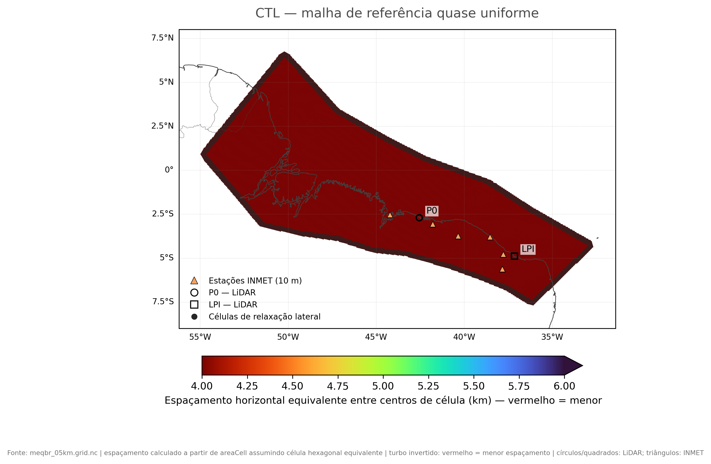
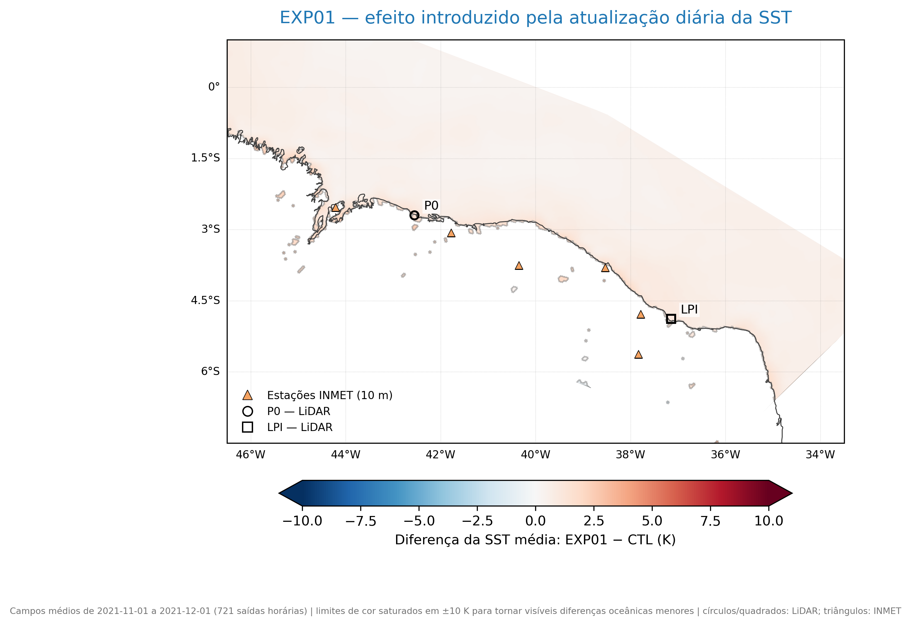
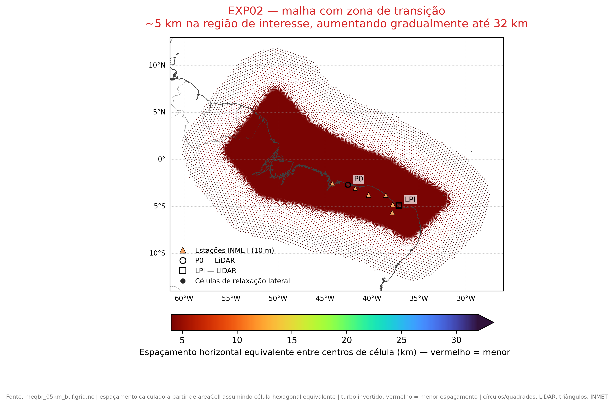
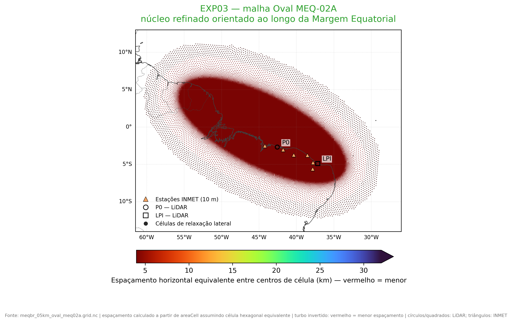

CTL
Referência do estudo: malha quase uniforme de 4,6 km e SST do ERA5 no instante inicial mantida fixa durante toda a integração.

Relatório técnico sobre o andamento da modelagem regional, o efeito das configurações testadas e a capacidade do downscaling de representar o recurso eólico offshore e a circulação costeira.
1 · Introdução e desenho experimental
Pergunta: quais mudanças de superfície oceânica, fronteira lateral e geometria de malha oferecem habilidade observacional suficiente para sustentar futuras integrações climatológicas?
O objetivo é escolher uma configuração do MPAS adequada para futuras simulações climatológicas de recurso eólico na Margem Equatorial Brasileira (MEqBr), preservando ganho físico e estatístico sem custo computacional desnecessário.
A atualização diária da temperatura da superfície do mar melhora a circulação costeira e o vento em altura de rotor?
Afastar a zona de relaxação permite que o MPAS desenvolva melhor as estruturas de mesoescala antes que o escoamento alcance a área de interesse?
A malha Oval mantém ou melhora a habilidade observacional sem que sua maior extensão seja confundida com evidência meteorológica?
O downscaling a aproximadamente 5 km reduz o erro do ERA5 nos LiDARs e acrescenta estrutura espacial relevante ao recurso eólico?
Como ler o relatório: cada seção parte de uma pergunta, apresenta a evidência disponível, explicita seus limites e encaminha a próxima decisão científica.
Todos os experimentos usam a mesma dinâmica, física, discretização vertical e períodos. Cada experimento herda o anterior e acrescenta uma mudança específica. O desenho é cumulativo, não fatorial: EXP02 − EXP01 representa o efeito incremental do tratamento de fronteira com a atualização de SST já ligada; EXP03 avalia a geometria Oval preservando a OISST corrigida e a caixa ERA5 ampla.
A tabela abaixo define o que permanece fixo. Assim, diferenças entre os experimentos não devem ser atribuídas a esses parâmetros.
| Componente | Configuração |
|---|---|
| Duração de cada integração | 41 dias, incluindo spin-up |
| Passo de tempo dinâmico | 30 s |
| Saída para análise | horária (1 h) |
| Condições iniciais e laterais | ERA5; fronteiras atualizadas a cada 6 h |
| Grade vertical | 55 camadas / 56 interfaces; topo em 30 km; centros em 12,5, 50, 100, 150, 200 e 250 m próximos à superfície |
| Dinâmica e mistura | RK3 split-explicit, 3 subpassos dinâmicos e 2 subpassos acústicos; mistura horizontal Smagorinsky 2D |
| Física atmosférica | mesoscale_reference: microfísica WSM6, radiação RRTMG, camada limite YSU, superfície Monin-Obukhov e convecção Tiedtke |
| Superfície terrestre | Noah-MP |
| Tipo de domínio | área limitada, sem assimilação de dados |
Integração: 21/10/2021 – 01/12/2021 (41 dias)
Spin-up descartado: 21/10 – 01/11 (11 dias)
Janela analisada: 01/11 – 01/12/2021 (30 dias)
Integração: 21/09/2022 – 01/11/2022 (41 dias)
Spin-up descartado: 21/09 – 01/10 (10 dias)
Janela analisada: 01/10 – 01/11/2022 (31 dias)
Em 2021 o intervalo entre 21/10 e 01/11 corresponde exatamente a 11 dias; em 2022, entre 21/09 e 01/10, a 10 dias. Ambos resultam em integrações completas de 41 dias porque as janelas científicas têm, respectivamente, 30 e 31 dias.
Referência do estudo: malha quase uniforme de 4,6 km e SST do ERA5 no instante inicial mantida fixa durante toda a integração.

Mantém a malha e toda a física do CTL, mas passa a aplicar SST diária NOAA OISST v2.1, com o preenchimento costeiro da OISST corrigido. É o incremento que testa a condição de superfície.

Mantém a SST diária corrigida do EXP01 e acrescenta o tratamento de fronteira: malha com buffer 5→32 km e condições ERA5 em uma caixa mais ampla.

Mantém a OISST diária corrigida e a caixa ERA5 ampla, mas usa a malha Oval MEQ-02A de 102.968 células, cujo núcleo refinado acompanha a Margem Equatorial. É uma candidata em avaliação, não uma escolha final.

Esta seção separa completude científica de desempenho computacional. Uma integração parcial pode informar custo até o momento, mas não deve sustentar uma conclusão final de habilidade.
| Experimento | Período | Malha | Saídas horárias na janela | Janela concluída (%) | Lacunas temporais | Último horário disponível |
|---|---|---|---|---|---|---|
| CTL | 2021 | meqbr_05km | 721 | 100,0 | 0 | 2021-12-01 |
| CTL | 2022 | meqbr_05km | 745 | 100,0 | 0 | 2022-11-01 |
| EXP01 | 2021 | meqbr_05km | 721 | 100,0 | 0 | 2021-12-01 |
| EXP01 | 2022 | meqbr_05km | 745 | 100,0 | 0 | 2022-11-01 |
| EXP02 | 2021 | meqbr_05km_buf | 721 | 100,0 | 0 | 2021-12-01 |
| EXP02 | 2022 | meqbr_05km_buf | 745 | 100,0 | 0 | 2022-11-01 |
| EXP03 | 2021 | meqbr_05km_oval_meq02a | 721 | 100,0 | 0 | 2021-12-01 |
| EXP03 | 2022 | meqbr_05km_oval_meq02a | 745 | 100,0 | 0 | 2022-11-01 |
| Experimento | Período | Situação da execução | Origem do tempo | Tempo de máquina equivalente (h por hora simulada, 1 núcleo) | Tempo estimado para simular 1 ano com 100 núcleos (dias) |
|---|---|---|---|---|---|
| CTL | 2021 | concluída; tempo reconstruído | estimado | 3,19 | 11,63 |
| CTL | 2022 | concluída; tempo reconstruído | estimado | 2,78 | 10,14 |
| EXP01 | 2021 | concluída | medido | 3,22 | 11,77 |
| EXP01 | 2022 | concluída | medido | 3,10 | 11,32 |
| EXP02 | 2021 | concluída | medido | 3,79 | 13,83 |
| EXP02 | 2022 | concluída; tempo reconstruído | estimado | 5,29 | 19,31 |
| EXP03 | 2021 | concluída | medido | 3,54 | 12,93 |
| EXP03 | 2022 | concluída | medido | 3,55 | 12,96 |
Interpretação: as oito pernas científicas estão completas; custo e número de células permanecem critérios operacionais, não evidência isolada de habilidade. A próxima seção examina o que cada configuração efetivamente simulou.
2 · Exploração dos resultados simulados
Pergunta: onde as configurações alteram vento, recurso eólico, SST, ciclo diurno e estrutura vertical, sem confundir uma diferença espacial com superioridade científica?
Antes de comparar o MPAS com observações, é necessário entender os campos que ele produz: onde estão os máximos de recurso, como a circulação varia no espaço e qual estrutura vertical aparece junto à costa.
Use os seletores para comparar as quatro configurações, os dois períodos e os campos disponíveis sem abrir dezenas de figuras. Os rasters médios estão em coordenadas geográficas e aceitam zoom e deslocamento; seções e animações são mídias diagnósticas pré-renderizadas, explicitamente identificadas.
Escopo: esta é uma inspeção espacial exploratória dos campos simulados. Ela não substitui a validação observacional quantitativa da seção 4 e não interpola temporalmente nenhum horário.
Limite: padrões espaciais ajudam a formular hipóteses, mas não determinam qual experimento representa melhor a atmosfera. Essa resposta exige a rede observacional apresentada a seguir.
3 · Rede observacional
Pergunta: quais instrumentos, períodos, alturas e critérios de correspondência sustentam a validação?
P0 e LPI representam o ambiente offshore em alturas de rotor; as estações automáticas INMET representam a circulação terrestre a 10 m. As redes respondem a perguntas complementares e permanecem separadas.
Arquivo nativo: registros em intervalos de 10 min; cada bin traz disponibilidade por altura.
Controle de qualidade: disponibilidade ≥80% e velocidade entre 0–40 m s⁻¹.
Alturas comparadas: 50, 100, 150 e 200 m na seleção; 250 m apenas descritivo (média dos canais 240/260 m).
Arquivo nativo: registros em intervalos de 10 min; o arquivo não traz indicador de disponibilidade nem explicita a estatística interna do instrumento.
Controle de qualidade: velocidade entre 0–40 m s⁻¹; não foi inventado um limiar ausente.
Alturas comparadas: 50, 100, 150 e 200 m.
A única assimetria restante é documental e de QC: P0 possui a variável de disponibilidade por altura; LPI não possui flag equivalente. Aplicar um limiar apenas a P0 é rastreável. Inventar um limiar para LPI não seria defensável.
Interpretação: a rede fornece dois eixos de evidência que não devem ser reduzidos a um escore único. A próxima seção permite explorar cada comparação observacional em seu contexto.
4 · Validação observacional
Pergunta: como viés, RMSE, correlação, distribuições, ciclos e perfis mudam por rede, ponto, período e altura?
LiDAR e INMET continuam separados. “Melhor resultado numérico” identifica apenas o valor da métrica; significância é comunicada exclusivamente pelos testes e intervalos disponíveis.
Escolha rede, ponto, período, altura e tipo de evidência. Métricas são dados interativos; figuras PNG são identificadas como produtos pré-renderizados e preservam acesso ao arquivo original.
| Rede | Fonte | Pontos | Pontos–período | Horas pareadas (soma) | Viés médio (m s⁻¹) | RMSE médio (m s⁻¹) | r médio | Redução RMSE vs ERA5 (%) | Murphy skill médio (%) | Pontos–período detectáveis |
|---|---|---|---|---|---|---|---|---|---|---|
| INMET | CTL | 4 | 6 | 3758 | 2,00 | 2,32 | 0,72 | 9,0 | 12,6 | 6 |
| INMET | ERA5 | 4 | 6 | 3758 | 2,30 | 2,57 | 0,63 | 0,0 | 0,0 | 0 |
| INMET | EXP01 | 4 | 6 | 3758 | 2,06 | 2,36 | 0,72 | 7,6 | 10,6 | 6 |
| INMET | EXP02 | 4 | 6 | 3758 | 1,85 | 2,20 | 0,64 | 13,4 | 22,7 | 6 |
| INMET | EXP03 | 4 | 6 | 3758 | 1,70 | 2,05 | 0,67 | 18,4 | 31,7 | 5 |
| LiDAR | CTL | 2 | 2 | 1247 | -1,10 | 2,24 | 0,57 | 9,5 | 17,9 | 1 |
| LiDAR | ERA5 | 2 | 2 | 1247 | -1,90 | 2,48 | 0,69 | 0,0 | 0,0 | 0 |
| LiDAR | EXP01 | 2 | 2 | 1247 | -0,75 | 2,05 | 0,58 | 17,5 | 31,9 | 2 |
| LiDAR | EXP02 | 2 | 2 | 1247 | -0,69 | 1,97 | 0,60 | 20,5 | 36,7 | 2 |
| LiDAR | EXP03 | 2 | 2 | 1247 | -0,63 | 1,90 | 0,61 | 23,2 | 41,0 | 2 |
As estações automáticas testam se o modelo representa magnitude, variabilidade espacial e fase do ciclo diurno do vento terrestre a 10 m.
| Fonte | Estações | Pares estação–período | Vento observado médio (m s⁻¹) | Vento modelado médio (m s⁻¹) | Viés modelo − observação (m s⁻¹) | RMSE (m s⁻¹) | r | Erro de fase do máximo diário (h) |
|---|---|---|---|---|---|---|---|---|
| CTL | 4 | 6 | 3,18 | 5,18 | 2,00 | 2,32 | 0,72 | -0,33 |
| ERA5 | 4 | 6 | 3,18 | 5,48 | 2,30 | 2,57 | 0,64 | -2,83 |
| EXP01 | 4 | 6 | 3,18 | 5,24 | 2,06 | 2,36 | 0,72 | -0,33 |
| EXP02 | 4 | 6 | 3,18 | 5,03 | 1,85 | 2,20 | 0,64 | 0,00 |
| EXP03 | 4 | 6 | 3,18 | 4,88 | 1,70 | 2,05 | 0,67 | 0,00 |
Distribuições e rosas dos ventos descrevem o regime observado antes de resumir o desempenho do modelo.
| Fonte | Período | Sítio | Altura (m) | Horas pareadas | RMSE (m s⁻¹) | RMSE — IC95% inferior | RMSE — IC95% superior | Viés modelo − observação (m s⁻¹) | r | Viés relativo da densidade de potência eólica (%) |
|---|---|---|---|---|---|---|---|---|---|---|
| CTL | 2021 | P0 | 50 | 507 | 2,18 | 1,97 | 2,43 | -1,17 | 0,40 | -37,1 |
| EXP01 | 2021 | P0 | 50 | 507 | 2,03 | 1,83 | 2,26 | -0,85 | 0,41 | -29,1 |
| EXP02 | 2021 | P0 | 50 | 507 | 1,95 | 1,74 | 2,15 | -0,84 | 0,45 | -29,7 |
| EXP03 | 2021 | P0 | 50 | 507 | 1,98 | 1,78 | 2,17 | -0,84 | 0,43 | -29,9 |
| CTL | 2021 | P0 | 100 | 507 | 2,18 | 1,95 | 2,44 | -1,24 | 0,42 | -36,9 |
| EXP01 | 2021 | P0 | 100 | 507 | 2,02 | 1,82 | 2,26 | -0,95 | 0,43 | -30,0 |
| EXP02 | 2021 | P0 | 100 | 507 | 1,92 | 1,71 | 2,12 | -0,89 | 0,47 | -29,4 |
| EXP03 | 2021 | P0 | 100 | 507 | 1,95 | 1,75 | 2,14 | -0,90 | 0,46 | -29,8 |
| ERA5 | 2021 | P0 | 100 | 507 | 2,49 | 2,27 | 2,78 | -1,90 | 0,53 | -51,4 |
| CTL | 2021 | P0 | 150 | 507 | 2,14 | 1,92 | 2,40 | -1,27 | 0,44 | -36,3 |
| EXP01 | 2021 | P0 | 150 | 507 | 1,98 | 1,78 | 2,21 | -1,01 | 0,45 | -30,4 |
| EXP02 | 2021 | P0 | 150 | 507 | 1,88 | 1,65 | 2,10 | -0,94 | 0,49 | -29,5 |
| EXP03 | 2021 | P0 | 150 | 507 | 1,89 | 1,69 | 2,09 | -0,96 | 0,48 | -29,9 |
| CTL | 2021 | P0 | 200 | 503 | 2,12 | 1,92 | 2,37 | -1,28 | 0,43 | -35,4 |
| EXP01 | 2021 | P0 | 200 | 503 | 1,97 | 1,76 | 2,20 | -1,08 | 0,46 | -31,2 |
| EXP02 | 2021 | P0 | 200 | 503 | 1,86 | 1,61 | 2,09 | -1,01 | 0,50 | -30,2 |
| EXP03 | 2021 | P0 | 200 | 503 | 1,87 | 1,67 | 2,08 | -1,03 | 0,50 | -30,7 |
| CTL | 2022 | LPI | 50 | 740 | 2,42 | 2,12 | 2,68 | -1,16 | 0,68 | -25,9 |
| EXP01 | 2022 | LPI | 50 | 740 | 2,13 | 1,87 | 2,37 | -0,63 | 0,70 | -15,0 |
| EXP02 | 2022 | LPI | 50 | 740 | 2,04 | 1,79 | 2,24 | -0,55 | 0,70 | -14,9 |
| EXP03 | 2022 | LPI | 50 | 740 | 1,88 | 1,65 | 2,06 | -0,42 | 0,75 | -11,9 |
| CTL | 2022 | LPI | 100 | 740 | 2,31 | 2,04 | 2,55 | -0,96 | 0,71 | -21,4 |
| EXP01 | 2022 | LPI | 100 | 740 | 2,07 | 1,82 | 2,28 | -0,55 | 0,74 | -13,5 |
| EXP02 | 2022 | LPI | 100 | 740 | 2,02 | 1,78 | 2,22 | -0,49 | 0,73 | -13,7 |
| EXP03 | 2022 | LPI | 100 | 740 | 1,86 | 1,65 | 2,04 | -0,37 | 0,77 | -10,8 |
| ERA5 | 2022 | LPI | 100 | 740 | 2,47 | 2,24 | 2,66 | -1,90 | 0,85 | -44,4 |
| CTL | 2022 | LPI | 150 | 740 | 2,12 | 1,88 | 2,33 | -0,70 | 0,75 | -16,1 |
| EXP01 | 2022 | LPI | 150 | 740 | 1,95 | 1,73 | 2,14 | -0,52 | 0,77 | -13,2 |
| EXP02 | 2022 | LPI | 150 | 740 | 1,96 | 1,73 | 2,16 | -0,50 | 0,76 | -14,1 |
| EXP03 | 2022 | LPI | 150 | 740 | 1,81 | 1,62 | 1,98 | -0,38 | 0,79 | -11,3 |
| CTL | 2022 | LPI | 200 | 740 | 1,92 | 1,72 | 2,12 | -0,45 | 0,79 | -10,9 |
| EXP01 | 2022 | LPI | 200 | 740 | 1,81 | 1,62 | 1,99 | -0,47 | 0,81 | -12,7 |
| EXP02 | 2022 | LPI | 200 | 740 | 1,91 | 1,70 | 2,11 | -0,52 | 0,78 | -14,8 |
| EXP03 | 2022 | LPI | 200 | 740 | 1,75 | 1,58 | 1,92 | -0,39 | 0,81 | -12,1 |
Limite: os dois períodos cobrem um mês em cada sítio; diferenças numéricas pequenas devem ser lidas junto dos intervalos pareados e da sensibilidade espacial.
5 · Valor adicionado ao ERA5
Pergunta: onde há ganho detectável, perda detectável, diferença não detectável ou comparação não realizada frente ao ERA5?
Valor adicionado significa reduzir o erro da reanálise nas observações e/ou acrescentar estrutura espacial fisicamente plausível. Maior resolução, sozinha, não garante maior habilidade.
| Fonte | Período | Sítio | Altura (m) | Horas pareadas | RMSE (m s⁻¹) | Viés (m s⁻¹) | r | Redução do RMSE frente ao ERA5 (%) | Redução do MSE frente ao ERA5 (%) | Redução do MSE — IC95% inferior (%) | Redução do MSE — IC95% superior (%) | Diferença estatisticamente detectável |
|---|---|---|---|---|---|---|---|---|---|---|---|---|
| ERA5 | 2021 | P0 | 100 | 507 | 2,49 | -1,90 | 0,53 | 0,0 | 0,0 | — | — | não |
| CTL | 2021 | P0 | 100 | 507 | 2,18 | -1,24 | 0,42 | 12,6 | 23,6 | 11,2 | 38,6 | sim |
| EXP01 | 2021 | P0 | 100 | 507 | 2,02 | -0,95 | 0,43 | 18,8 | 34,0 | 21,6 | 49,7 | sim |
| EXP02 | 2021 | P0 | 100 | 507 | 1,92 | -0,89 | 0,47 | 22,8 | 40,4 | 25,8 | 61,1 | sim |
| EXP03 | 2021 | P0 | 100 | 507 | 1,95 | -0,90 | 0,46 | 21,9 | 39,0 | 24,8 | 58,7 | sim |
| ERA5 | 2022 | LPI | 100 | 740 | 2,47 | -1,90 | 0,85 | 0,0 | 0,0 | — | — | não |
| CTL | 2022 | LPI | 100 | 740 | 2,31 | -0,96 | 0,71 | 6,3 | 12,2 | -1,8 | 27,4 | não |
| EXP01 | 2022 | LPI | 100 | 740 | 2,07 | -0,55 | 0,74 | 16,2 | 29,8 | 15,8 | 44,1 | sim |
| EXP02 | 2022 | LPI | 100 | 740 | 2,02 | -0,49 | 0,73 | 18,2 | 33,0 | 21,4 | 46,6 | sim |
| EXP03 | 2022 | LPI | 100 | 740 | 1,86 | -0,37 | 0,77 | 24,5 | 43,0 | 31,6 | 55,3 | sim |
| Período | Nome | Fonte | Horas pareadas | Viés (m s⁻¹) | Viés IC95% inf. | Viés IC95% sup. | RMSE (m s⁻¹) | RMSE IC95% inf. | RMSE IC95% sup. | r | r IC95% inf. | r IC95% sup. | Redução RMSE vs ERA5 (%) | Murphy skill vs ERA5 (%) | Skill IC95% inf. (%) | Skill IC95% sup. (%) | Diferença detectável |
|---|---|---|---|---|---|---|---|---|---|---|---|---|---|---|---|---|---|
| 2021 | SAO LUIS (INMET A) | CTL | 677 | 2,83 | 2,77 | 2,88 | 2,91 | 2,86 | 2,97 | 0,81 | 0,78 | 0,83 | -5,0 | -10,2 | -14,9 | -5,6 | sim |
| 2021 | SAO LUIS (INMET A) | ERA5 | 677 | 2,65 | 2,59 | 2,71 | 2,77 | 2,72 | 2,83 | 0,63 | 0,59 | 0,68 | 0,0 | 0,0 | — | — | não |
| 2021 | SAO LUIS (INMET A) | EXP01 | 677 | 2,83 | 2,77 | 2,88 | 2,92 | 2,87 | 2,97 | 0,79 | 0,76 | 0,82 | -5,2 | -10,6 | -14,7 | -6,5 | sim |
| 2021 | SAO LUIS (INMET A) | EXP02 | 677 | 2,57 | 2,51 | 2,62 | 2,68 | 2,63 | 2,74 | 0,67 | 0,62 | 0,71 | 3,3 | 6,4 | 2,6 | 10,0 | sim |
| 2021 | SAO LUIS (INMET A) | EXP03 | 677 | 2,21 | 2,16 | 2,26 | 2,32 | 2,27 | 2,37 | 0,76 | 0,73 | 0,80 | 16,5 | 30,2 | 26,6 | 33,9 | sim |
| 2021 | FORTALEZA (INMET A) | CTL | 308 | 0,89 | 0,81 | 0,98 | 1,17 | 1,08 | 1,26 | 0,72 | 0,67 | 0,77 | 42,8 | 67,3 | 62,7 | 71,9 | sim |
| 2021 | FORTALEZA (INMET A) | ERA5 | 308 | 1,93 | 1,86 | 2,00 | 2,04 | 1,96 | 2,12 | 0,79 | 0,76 | 0,83 | 0,0 | 0,0 | — | — | não |
| 2021 | FORTALEZA (INMET A) | EXP01 | 308 | 1,01 | 0,93 | 1,10 | 1,27 | 1,18 | 1,36 | 0,72 | 0,67 | 0,77 | 37,8 | 61,3 | 56,8 | 65,8 | sim |
| 2021 | FORTALEZA (INMET A) | EXP02 | 308 | 1,02 | 0,93 | 1,12 | 1,34 | 1,24 | 1,44 | 0,60 | 0,53 | 0,67 | 34,3 | 56,8 | 51,9 | 61,5 | sim |
| 2021 | FORTALEZA (INMET A) | EXP03 | 308 | 1,05 | 0,97 | 1,14 | 1,34 | 1,24 | 1,43 | 0,66 | 0,60 | 0,71 | 34,4 | 57,0 | 52,3 | 61,6 | sim |
| 2021 | JAGUARUANA (INMET A) | CTL | 721 | 1,70 | 1,59 | 1,81 | 2,30 | 2,17 | 2,44 | 0,67 | 0,62 | 0,72 | -14,1 | -30,2 | -39,3 | -21,4 | sim |
| 2021 | JAGUARUANA (INMET A) | ERA5 | 721 | 1,47 | 1,37 | 1,57 | 2,01 | 1,89 | 2,15 | 0,67 | 0,62 | 0,72 | 0,0 | 0,0 | — | — | não |
| 2021 | JAGUARUANA (INMET A) | EXP01 | 721 | 1,78 | 1,67 | 1,88 | 2,32 | 2,18 | 2,46 | 0,69 | 0,64 | 0,74 | -15,1 | -32,6 | -41,4 | -24,0 | sim |
| 2021 | JAGUARUANA (INMET A) | EXP02 | 721 | 1,10 | 1,00 | 1,20 | 1,77 | 1,63 | 1,91 | 0,69 | 0,64 | 0,74 | 12,1 | 22,7 | 15,8 | 30,3 | sim |
| 2021 | JAGUARUANA (INMET A) | EXP03 | 721 | 1,11 | 1,02 | 1,21 | 1,77 | 1,64 | 1,92 | 0,70 | 0,64 | 0,75 | 12,0 | 22,6 | 15,9 | 30,1 | sim |
| 2022 | SAO LUIS (INMET A) | CTL | 666 | 3,47 | 3,40 | 3,55 | 3,62 | 3,54 | 3,70 | 0,78 | 0,75 | 0,81 | 3,9 | 7,6 | 3,0 | 11,8 | sim |
| 2022 | SAO LUIS (INMET A) | ERA5 | 666 | 3,66 | 3,59 | 3,72 | 3,76 | 3,70 | 3,83 | 0,54 | 0,48 | 0,60 | 0,0 | 0,0 | — | — | não |
| 2022 | SAO LUIS (INMET A) | EXP01 | 666 | 3,54 | 3,47 | 3,61 | 3,67 | 3,60 | 3,74 | 0,78 | 0,74 | 0,81 | 2,6 | 5,0 | 0,9 | 9,1 | sim |
| 2022 | SAO LUIS (INMET A) | EXP02 | 666 | 3,03 | 2,97 | 3,09 | 3,14 | 3,08 | 3,20 | 0,61 | 0,56 | 0,66 | 16,5 | 30,3 | 27,4 | 33,3 | sim |
| 2022 | SAO LUIS (INMET A) | EXP03 | 666 | 2,60 | 2,54 | 2,67 | 2,74 | 2,68 | 2,80 | 0,66 | 0,61 | 0,71 | 27,1 | 46,9 | 43,6 | 50,1 | sim |
| 2022 | FORTALEZA (INMET A) | CTL | 694 | 1,81 | 1,75 | 1,88 | 2,00 | 1,93 | 2,06 | 0,71 | 0,68 | 0,74 | 34,4 | 56,9 | 53,8 | 60,2 | sim |
| 2022 | FORTALEZA (INMET A) | ERA5 | 694 | 2,90 | 2,84 | 2,97 | 3,04 | 2,98 | 3,11 | 0,65 | 0,61 | 0,69 | 0,0 | 0,0 | — | — | não |
| 2022 | FORTALEZA (INMET A) | EXP01 | 694 | 1,91 | 1,84 | 1,97 | 2,09 | 2,03 | 2,16 | 0,69 | 0,65 | 0,72 | 31,2 | 52,7 | 49,4 | 56,1 | sim |
| 2022 | FORTALEZA (INMET A) | EXP02 | 694 | 2,03 | 1,96 | 2,11 | 2,26 | 2,19 | 2,33 | 0,57 | 0,52 | 0,62 | 25,8 | 44,9 | 42,0 | 48,1 | sim |
| 2022 | FORTALEZA (INMET A) | EXP03 | 694 | 1,99 | 1,91 | 2,06 | 2,23 | 2,15 | 2,30 | 0,54 | 0,49 | 0,59 | 26,8 | 46,5 | 43,6 | 49,7 | sim |
| 2022 | APODI (INMET A) | CTL | 692 | 1,31 | 1,20 | 1,41 | 1,93 | 1,81 | 2,05 | 0,65 | 0,59 | 0,70 | -7,7 | -16,0 | -29,5 | -3,7 | sim |
| 2022 | APODI (INMET A) | ERA5 | 692 | 1,19 | 1,08 | 1,28 | 1,79 | 1,71 | 1,87 | 0,52 | 0,45 | 0,58 | 0,0 | 0,0 | — | — | não |
| 2022 | APODI (INMET A) | EXP01 | 692 | 1,32 | 1,22 | 1,42 | 1,89 | 1,79 | 2,01 | 0,67 | 0,62 | 0,72 | -5,9 | -12,2 | -24,5 | -1,4 | sim |
| 2022 | APODI (INMET A) | EXP02 | 692 | 1,37 | 1,27 | 1,48 | 2,00 | 1,86 | 2,15 | 0,70 | 0,64 | 0,75 | -11,7 | -24,8 | -41,8 | -7,4 | sim |
| 2022 | APODI (INMET A) | EXP03 | 692 | 1,24 | 1,13 | 1,35 | 1,90 | 1,77 | 2,05 | 0,70 | 0,64 | 0,75 | -6,4 | -13,1 | -29,3 | 2,5 | não |
| Experimento | Período | Saídas horárias | Vento médio MPAS (m s⁻¹) | Vento médio ERA5 (m s⁻¹) | Diferença MPAS − ERA5 (m s⁻¹) | Diferença relativa da potência eólica (%) |
|---|---|---|---|---|---|---|
| CTL | 2021 | 721 | 6,83 | 6,63 | 0,20 | 9,4 |
| CTL | 2022 | 745 | 8,88 | 8,21 | 0,66 | 23,2 |
| EXP01 | 2021 | 721 | 6,95 | 6,63 | 0,32 | 14,8 |
| EXP01 | 2022 | 745 | 8,97 | 8,21 | 0,76 | 27,1 |
| EXP02 | 2021 | 721 | 6,61 | 6,16 | 0,44 | 16,8 |
| EXP02 | 2022 | 745 | 8,58 | 7,73 | 0,85 | 28,6 |
| EXP03 | 2021 | 721 | 6,58 | 6,16 | 0,42 | 15,7 |
| EXP03 | 2022 | 745 | 8,60 | 7,73 | 0,87 | 29,8 |
Interpretação: ganho espacial ou numérico só é tratado como sustentado quando o intervalo disponível não inclui zero. Alturas sem ERA5 equivalente permanecem “não avaliadas”.
6 · Interpretação física
Pergunta: SST, fluxos de superfície, camada limite e influência da fronteira sustentam a direção das respostas observadas?
O ranking estatístico precisa ser consistente com o mecanismo esperado. Uma aparente melhora sem resposta coerente em SST, fluxos, camada limite ou distância da fronteira não é transferível para simulações climatológicas.
Limite: o desenho é cumulativo e EXP03 altera geometria, decomposição e representação pontual. As evidências sustentam mecanismos plausíveis, não causalidade exclusiva.
7 · Síntese e seleção científica
Pergunta: como desempenho LiDAR, resultados INMET, valor adicionado, testes pareados, sensibilidade espacial e custo se combinam sem produzir um ranking automático?
EXP03 acompanha as candidatas corrigidas em P0/2021 e apresenta a menor RMSE a 100 m em LPI/2022.
EXP03 reduz viés e RMSE médios, mas não maximiza a correlação; esse eixo não ranqueia sozinho o recurso offshore.
Em 100 m, EXP03 adiciona habilidade sobre ERA5 nos dois LiDARs; os intervalos permanecem visíveis nas tabelas.
O custo medido e a sensibilidade à célula precisam acompanhar qualquer decisão de configuração.
Contagens por unidade observacional: IC95% totalmente positivo = ganho detectável; totalmente negativo = perda detectável; intervalo contendo zero = diferença não detectável. Casos sem avaliação comparável permanecem separados.
| Período | Sítio | Altura (m) | Experimento A | Experimento B | Horas pareadas | RMSE de A (m s⁻¹) | RMSE de B (m s⁻¹) | MSE(A) − MSE(B) (m² s⁻²) | IC95% inferior | IC95% superior | Melhor |
|---|---|---|---|---|---|---|---|---|---|---|---|
| 2021 | P0 | 50 | CTL | EXP01 | 507 | 2,18 | 2,03 | 0,66 | 0,20 | 1,15 | EXP01 |
| 2021 | P0 | 50 | CTL | EXP02 | 507 | 2,18 | 1,95 | 0,96 | 0,33 | 1,77 | EXP02 |
| 2021 | P0 | 50 | CTL | EXP03 | 507 | 2,18 | 1,98 | 0,86 | 0,27 | 1,62 | EXP03 |
| 2021 | P0 | 50 | EXP01 | EXP02 | 507 | 2,03 | 1,95 | 0,30 | -0,26 | 1,05 | sem diferença detectável |
| 2021 | P0 | 50 | EXP01 | EXP03 | 507 | 2,03 | 1,98 | 0,20 | -0,33 | 0,88 | sem diferença detectável |
| 2021 | P0 | 50 | EXP02 | EXP03 | 507 | 1,95 | 1,98 | -0,10 | -0,47 | 0,21 | sem diferença detectável |
| 2021 | P0 | 100 | CTL | EXP01 | 507 | 2,18 | 2,02 | 0,64 | 0,18 | 1,13 | EXP01 |
| 2021 | P0 | 100 | CTL | EXP02 | 507 | 2,18 | 1,92 | 1,04 | 0,37 | 1,91 | EXP02 |
| 2021 | P0 | 100 | CTL | EXP03 | 507 | 2,18 | 1,95 | 0,96 | 0,34 | 1,75 | EXP03 |
| 2021 | P0 | 100 | EXP01 | EXP02 | 507 | 2,02 | 1,92 | 0,40 | -0,20 | 1,20 | sem diferença detectável |
| 2021 | P0 | 100 | EXP01 | EXP03 | 507 | 2,02 | 1,95 | 0,31 | -0,23 | 1,01 | sem diferença detectável |
| 2021 | P0 | 100 | EXP02 | EXP03 | 507 | 1,92 | 1,95 | -0,08 | -0,47 | 0,24 | sem diferença detectável |
| 2021 | P0 | 150 | CTL | EXP01 | 507 | 2,14 | 1,98 | 0,65 | 0,21 | 1,13 | EXP01 |
| 2021 | P0 | 150 | CTL | EXP02 | 507 | 2,14 | 1,88 | 1,05 | 0,36 | 1,94 | EXP02 |
| 2021 | P0 | 150 | CTL | EXP03 | 507 | 2,14 | 1,89 | 0,99 | 0,39 | 1,78 | EXP03 |
| 2021 | P0 | 150 | EXP01 | EXP02 | 507 | 1,98 | 1,88 | 0,40 | -0,24 | 1,23 | sem diferença detectável |
| 2021 | P0 | 150 | EXP01 | EXP03 | 507 | 1,98 | 1,89 | 0,34 | -0,20 | 1,03 | sem diferença detectável |
| 2021 | P0 | 150 | EXP02 | EXP03 | 507 | 1,88 | 1,89 | -0,05 | -0,45 | 0,29 | sem diferença detectável |
| 2021 | P0 | 200 | CTL | EXP01 | 503 | 2,12 | 1,97 | 0,64 | 0,22 | 1,05 | EXP01 |
| 2021 | P0 | 200 | CTL | EXP02 | 503 | 2,12 | 1,86 | 1,04 | 0,36 | 1,88 | EXP02 |
| 2021 | P0 | 200 | CTL | EXP03 | 503 | 2,12 | 1,87 | 1,01 | 0,41 | 1,78 | EXP03 |
| 2021 | P0 | 200 | EXP01 | EXP02 | 503 | 1,97 | 1,86 | 0,41 | -0,25 | 1,24 | sem diferença detectável |
| 2021 | P0 | 200 | EXP01 | EXP03 | 503 | 1,97 | 1,87 | 0,37 | -0,17 | 1,07 | sem diferença detectável |
| 2021 | P0 | 200 | EXP02 | EXP03 | 503 | 1,86 | 1,87 | -0,03 | -0,45 | 0,33 | sem diferença detectável |
| 2022 | LPI | 50 | CTL | EXP01 | 740 | 2,42 | 2,13 | 1,30 | 0,88 | 1,74 | EXP01 |
| 2022 | LPI | 50 | CTL | EXP02 | 740 | 2,42 | 2,04 | 1,66 | 0,67 | 2,83 | EXP02 |
| 2022 | LPI | 50 | CTL | EXP03 | 740 | 2,42 | 1,88 | 2,32 | 1,35 | 3,46 | EXP03 |
| 2022 | LPI | 50 | EXP01 | EXP02 | 740 | 2,13 | 2,04 | 0,36 | -0,44 | 1,39 | sem diferença detectável |
| 2022 | LPI | 50 | EXP01 | EXP03 | 740 | 2,13 | 1,88 | 1,02 | 0,26 | 1,99 | EXP03 |
| 2022 | LPI | 50 | EXP02 | EXP03 | 740 | 2,04 | 1,88 | 0,65 | 0,30 | 1,00 | EXP03 |
| 2022 | LPI | 100 | CTL | EXP01 | 740 | 2,31 | 2,07 | 1,07 | 0,70 | 1,41 | EXP01 |
| 2022 | LPI | 100 | CTL | EXP02 | 740 | 2,31 | 2,02 | 1,26 | 0,36 | 2,28 | EXP02 |
| 2022 | LPI | 100 | CTL | EXP03 | 740 | 2,31 | 1,86 | 1,87 | 0,99 | 2,84 | EXP03 |
| 2022 | LPI | 100 | EXP01 | EXP02 | 740 | 2,07 | 2,02 | 0,20 | -0,56 | 1,13 | sem diferença detectável |
| 2022 | LPI | 100 | EXP01 | EXP03 | 740 | 2,07 | 1,86 | 0,81 | 0,09 | 1,71 | EXP03 |
| 2022 | LPI | 100 | EXP02 | EXP03 | 740 | 2,02 | 1,86 | 0,61 | 0,25 | 0,96 | EXP03 |
| 2022 | LPI | 150 | CTL | EXP01 | 740 | 2,12 | 1,95 | 0,71 | 0,39 | 0,98 | EXP01 |
| 2022 | LPI | 150 | CTL | EXP02 | 740 | 2,12 | 1,96 | 0,65 | -0,02 | 1,35 | sem diferença detectável |
| 2022 | LPI | 150 | CTL | EXP03 | 740 | 2,12 | 1,81 | 1,22 | 0,56 | 1,87 | EXP03 |
| 2022 | LPI | 150 | EXP01 | EXP02 | 740 | 1,95 | 1,96 | -0,05 | -0,67 | 0,68 | sem diferença detectável |
| 2022 | LPI | 150 | EXP01 | EXP03 | 740 | 1,95 | 1,81 | 0,51 | -0,08 | 1,18 | sem diferença detectável |
| 2022 | LPI | 150 | EXP02 | EXP03 | 740 | 1,96 | 1,81 | 0,56 | 0,22 | 0,90 | EXP03 |
| 2022 | LPI | 200 | CTL | EXP01 | 740 | 1,92 | 1,81 | 0,43 | 0,20 | 0,65 | EXP01 |
| 2022 | LPI | 200 | CTL | EXP02 | 740 | 1,92 | 1,91 | 0,03 | -0,47 | 0,51 | sem diferença detectável |
| 2022 | LPI | 200 | CTL | EXP03 | 740 | 1,92 | 1,75 | 0,63 | 0,15 | 1,08 | EXP03 |
| 2022 | LPI | 200 | EXP01 | EXP02 | 740 | 1,81 | 1,91 | -0,39 | -0,83 | 0,04 | sem diferença detectável |
| 2022 | LPI | 200 | EXP01 | EXP03 | 740 | 1,81 | 1,75 | 0,21 | -0,19 | 0,58 | sem diferença detectável |
| 2022 | LPI | 200 | EXP02 | EXP03 | 740 | 1,91 | 1,75 | 0,60 | 0,26 | 0,90 | EXP03 |
ust, znt, zol), separando rugosidade, mistura e forçamento lateral.Registro honesto do que, nesta análise, não deve ser lido literalmente. Cada item muda como um número específico pode ser citado.
sst_forcing_known_bad. Só uma
contaminação nova interrompe o pipeline.Registrados porque eram silenciosos — nenhum deles produzia erro, todos produziam resultado errado ou incompleto.
_fullwindow continuavam versionadas com
resultados anteriores à correção, sob os mesmos nomes de experimento,
e já não eram regeradas pelo pipeline. Foram removidas.Recomendação: EXP03 permanece candidata forte para revisão científica final, mas o relatório não ratifica automaticamente a configuração climatológica.